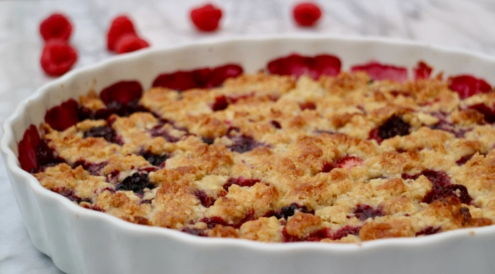

Crumble Pie Recipe
Preparation Time: 40 minutes

Ingredients
- 1 lb berries or apples or rhubarbs
- 3 tbs granulated sugar
- 1 tbs corn starch
- 5 tbs granulated sugar
- 2/3 cup rolled oats
- 6 tbs all purpose flour
- 8 1/2 tbs butter (room temperature)
Instructions
-
Pre heat the oven to 425ºF. Use a a 8” diameter pie dish which is about
1” deep. Place the berries/fruit in the pie dish. Add the sugar and the
corn starch over the berries and mix it carefully without mashing the
berries.
-
Mix sugar, rolled oats and flour in a bowl. Add the the soft butter in
smaller pieces into the bowl. Rub in the butter using your finger tips
until it forms crumbs and starts to stick together. Crumble the mixture
loosely over the berries in the pie dish with your fingers, so that it
leaves slight gaps and you can still see the berries underneath.
-
Bake it in the middle part of the oven for approximately 20 minutes
until the crumbles get a crispy golden color.
-
Serve your crumble pie with vanilla ice cream (or vanilla sauce) and
some fresh berries on top.